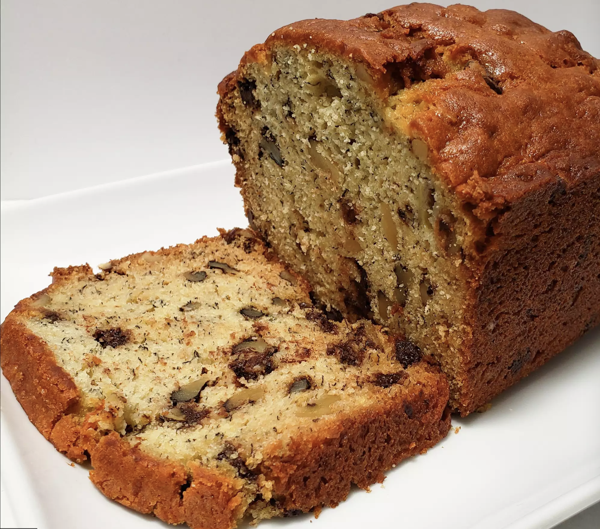

Banana Bread
Banana bread is one of those things people rarely make on purpose, only when those last three bananas are almost black. This scrumptious banana-walnut loaf, spiked with dark chocolate chips, is so good you'll want to make it well before the bananas get to that condition

Ingredients
- cooking spray
- 2 cups all-purpose flour
- 1 teaspoon salt
- 1 teaspoon baking powder
- 1 teaspoon baking soda
- ½ cup butter, softened
- 3 ripe bananas, mashed
- 1 cup white sugar
- 2 large eggs
- ¼ teaspoon vanilla extract
- 1 tablespoon milk
- 1 cup chopped walnuts
- ⅓ cup semisweet chocolate chips
Steps
- Preheat the oven to 325 degrees F (165 degrees C). Coat a 9x4-inch loaf pan with cooking spray.
- Whisk flour, salt, baking powder, and baking soda together in a bowl.
- Beat butter and sugar with an electric mixer in a large bowl until smooth. Add mashed bananas and beat until combined. Beat eggs into the butter mixture one at a time, fully blending each egg before adding the next. Stir vanilla extract and milk into the mixture.
- Stir chopped walnuts, chocolate chips, and flour mixture into banana mixture until just incorporated
- Pour batter into the prepared loaf pan. Tap pan on the counter to release any air pockets.
- Bake in preheated oven for about 1 hour 10 minutes, or until an inserted toothpick comes out clean.
- Let the bread rest in the pan for 15-20 minutes; remove from pan, slice, and serve.